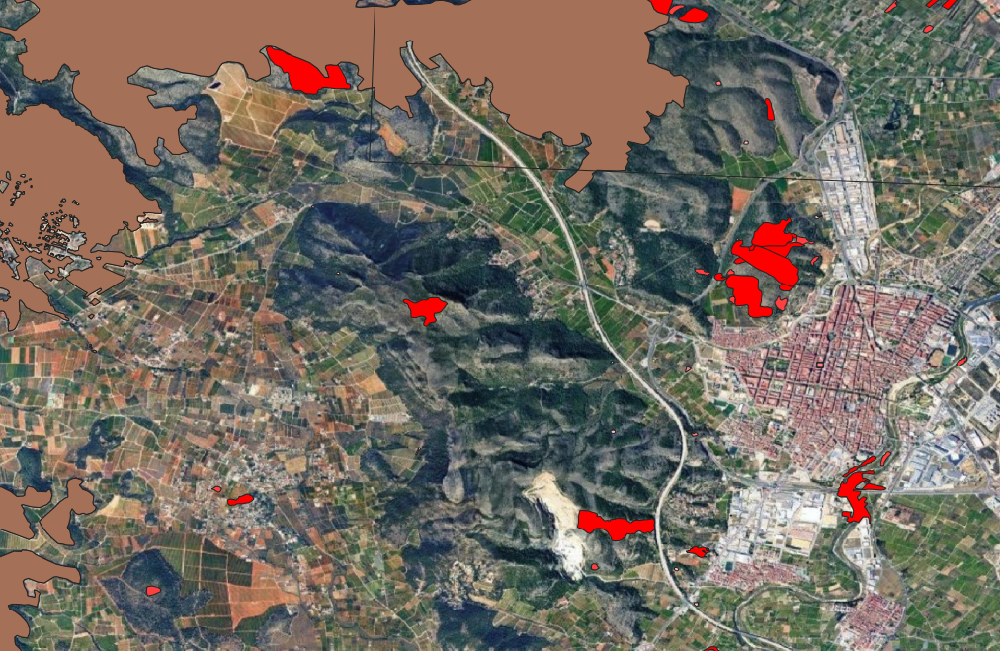
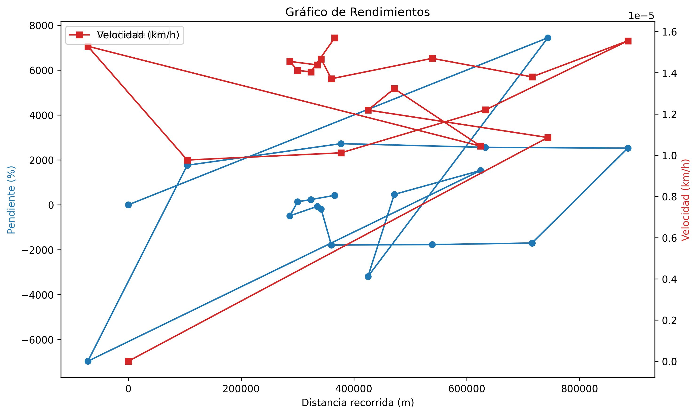

Portafolio de Geografía
En esta página se muestran todas las prácticas realizadas al largo del curso.
Ver las prácticasEquipo del proyecto
Raúl Sanabria Rodado
Tecnologías de la información geográfica - 3º GTI
Ferran Sansaloni Prats
Tecnologías de la información geográfica - 3º GTI
Prácticas realizadas

Práctica 1: Mapa de incendios
Esta práctica introduce el programa QGIS para gestionar fuentes cartográficas. Aprenderemos a editar simbología y atributos para diseñar, maquetar y exportar un mapa donde mostramos los incendios producidos en una zona.
Práctica 3: Mapa de temperaturas y precipitaciones
En esta práctica hemos realizado la interpolación de datos climáticos de estaciones meteorológicas para generar modelos continuos de temperaturas y precipitaciones en la península.
Práctica 4: Capa Zonas Válidas.shp
Localizaremos zonas aptas para el lobo en Castilla y León combinando análisis ráster climático y filtros vectoriales demográficos.
Práctica 5: Severidad del incendio (WebMap)
En esta práctica se ha generado un mapa web interactivo a partir de un ráster de severidad obtenido mediante teledetección. El mapa permite visualizar la distribución espacial de la severidad del incendio, así como interactuar con la leyenda y la escala.

Práctica 7: Tabla de resultados y gráfico de rendimiento.
En esta práctica procesamos datos GNSS mediante Python para el cálculo de parámetros espaciales y temporales, incluyendo el análisis de pendientes y velocidades.
Práctica 8: Contenedores.html y Accidentes Madrid.html
En esta práctica hemos usado Folium para realizar dos mapas, uno para ver los contenedores de Madrid y otro para ver los accidentes de las mujeres.
Mapa con índices EVI
Mapa con índices SAVI
Práctica 9: cálculo de los índices SAVI y EVI.
En esta práctica usamos Google Earth Engine para obtener índices más precisos que el habitual NDVI. Calculamos el SAVI y el EVI para corregir las distorsiones que provocan el suelo y la atmósfera al analizar la vegetación.
Práctica 10: Detección de agua y umbralización (Biwa y Chiquita)
Aprendimos a diferenciar agua y tierra mediante scripts en GEE. Usamos imágenes del Lago Biwa y Mar Chiquita para definir umbrales que nos permitieron detectar y aislar automáticamente las masas de agua de la superficie terrestre.